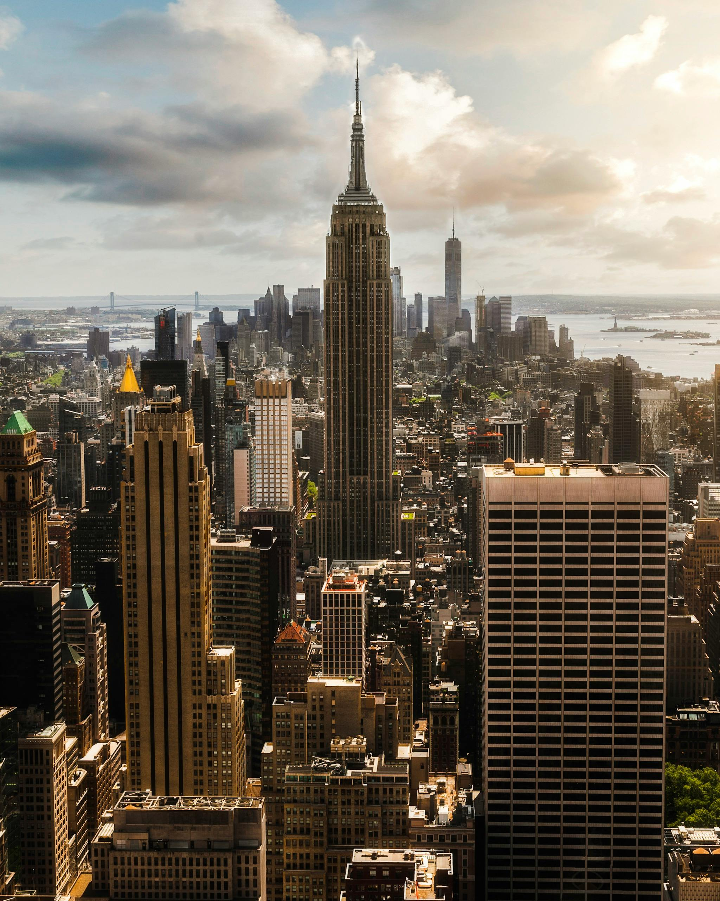

Explore New York City
Empire State Building
The Empire State Building is a landmark skyscraper in Midtown Manhattan. Its Art Deco design and observation decks make it one of New York City’s most recognizable buildings.

A little background
About the landmark
How it began
Construction began in 1930, and the building opened in 1931. It was designed by the architectural firm Shreve, Lamb & Harmon and became the world’s tallest building at the time.
Today
The building is still used for offices, while its observation decks welcome visitors who want wide views of Manhattan and the surrounding area. The 86th-floor outdoor deck and 102nd-floor indoor observatory offer different views.
Plan your visit
Directions
20 West 34th Street, New York, NY